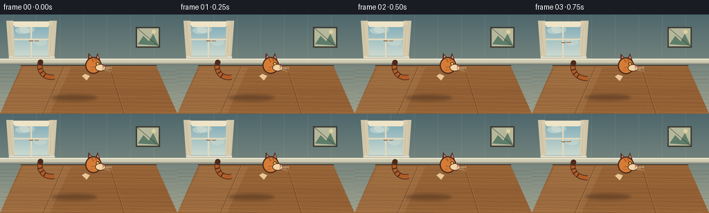
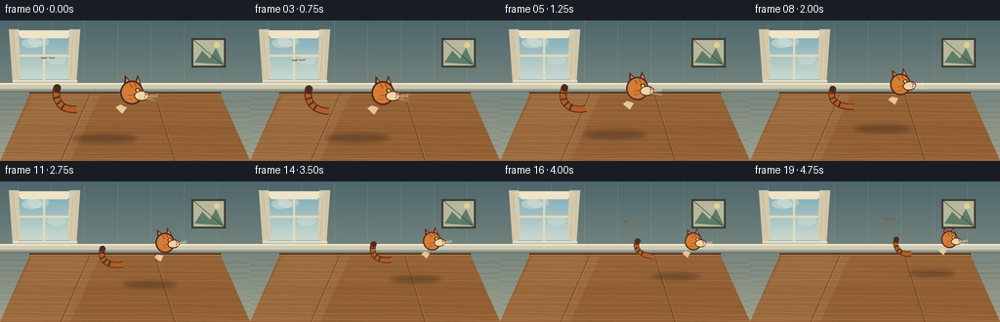
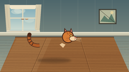
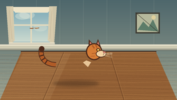
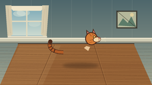
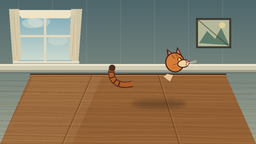
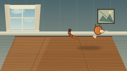
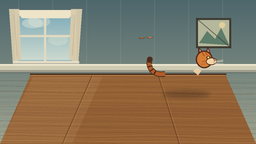
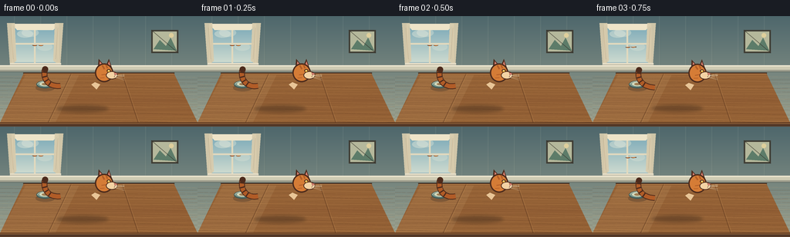

CODING AGENTS AS PIXEL WORLD MODELS
traex/DeepSeek-V4.1-Flash · dynamic_spatial_relationship_0013
点击播放 · 原生 RGB 像素
逐轮保存的候选
回放视频、检查图与代码变化。
每份候选均可单独播放。实际图片检查记录在下方工具轨迹中。
候选 01播放与检查图
点击播放 · 原生 RGB 像素


展开代码变化
--- 上一保存版本
+++ 本次保存版本
@@ -0,0 +1,462 @@
+from pathlib import Path
+import math
+
+import numpy as np
+from PIL import Image, ImageChops, ImageDraw, ImageFilter
+
+import artifact_io
+
+
+CASE_DIR = Path(__file__).resolve().parent
+W, H = 256, 144
+N, FPS = 20, 4
+SS = 4
+S = W * SS, H * SS
+
+
+def sc(value):
+ return int(round(value * SS))
+
+
+def box(values):
+ return tuple(sc(v) for v in values)
+
+
+def mix(a, b, t):
+ return tuple(int(round(a[i] + (b[i] - a[i]) * t)) for i in range(3))
+
+
+def make_background():
+ top = np.array((78, 103, 108), dtype=np.float32)
+ bottom = np.array((158, 164, 145), dtype=np.float32)
+ rows = np.linspace(0.0, 1.0, S[1], dtype=np.float32)[:, None]
+ wall = top[None, :] * (1.0 - rows) + bottom[None, :] * rows
+ wall = np.repeat(wall[:, None, :], S[0], axis=1)
+
+ x = np.linspace(0.0, 1.0, S[0], dtype=np.float32)[None, :]
+ wall += (8.0 * np.sin(x * 52.0) - 4.0) [:, :, None] if False else 0
+ image = Image.fromarray(np.clip(wall, 0, 255).astype(np.uint8), "RGB")
+ draw = ImageDraw.Draw(image, "RGBA")
+
+ # Quiet wall paneling, kept low contrast behind the cat.
+ for px in range(18, W, 34):
+ draw.rectangle(box((px, 0, px + 1.3, 69)), fill=(224, 225, 199, 17))
+ draw.rectangle(box((px + 1.3, 0, px + 2.1, 69)), fill=(36, 59, 63, 12))
+
+ # Cool daylight window.
+ draw.rectangle(box((15, 10, 76, 63)), fill=(225, 217, 190, 255))
+ draw.rectangle(box((17, 12, 74, 61)), fill=(154, 185, 191, 255))
+ sky_top = (126, 171, 184)
+ sky_bottom = (204, 218, 207)
+ for y in range(sc(13), sc(60)):
+ t = (y / SS - 13) / 47
+ draw.line((sc(18), y, sc(73), y), fill=(*mix(sky_top, sky_bottom, t), 255))
+ draw.ellipse(box((22, 18, 43, 28)), fill=(235, 237, 220, 100))
+ draw.ellipse(box((28, 16, 50, 27)), fill=(235, 237, 220, 88))
+ draw.ellipse(box((48, 35, 68, 45)), fill=(237, 236, 217, 68))
+ draw.rectangle(box((44, 12, 46, 61)), fill=(225, 217, 190, 255))
+ draw.rectangle(box((17, 35, 74, 37)), fill=(225, 217, 190, 255))
+ draw.line(box((17, 12, 18, 61)), fill=(118, 135, 132, 180), width=sc(1))
+ draw.line(box((73, 12, 74, 61)), fill=(118, 135, 132, 180), width=sc(1))
+ draw.polygon(
+ [box((15, 10))[0:2], box((76, 10))[0:2], box((69, 18))[0:2], box((22, 18))[0:2]],
+ fill=(238, 228, 200, 255),
+ )
+
+ # Window curtains and a narrow sill.
+ draw.polygon(
+ [box((9, 9))[0:2], box((19, 9))[0:2], box((21, 58))[0:2], box((13, 66))[0:2]],
+ fill=(216, 203, 172, 238),
+ )
+ draw.polygon(
+ [box((71, 9))[0:2], box((82, 9))[0:2], box((78, 65))[0:2], box((69, 58))[0:2]],
+ fill=(216, 203, 172, 238),
+ )
+ draw.line(box((14, 15, 17, 56)), fill=(187, 169, 139, 130), width=sc(0.8))
+ draw.line(box((75, 15, 72, 56)), fill=(187, 169, 139, 130), width=sc(0.8))
+ draw.rectangle(box((13, 61, 79, 64)), fill=(230, 222, 199, 255))
+ draw.rectangle(box((13, 63, 79, 65)), fill=(119, 121, 107, 100))
+
+ # A small landscape frame balances the window without competing with the cat.
+ draw.rectangle(box((196, 18, 231, 48)), fill=(63, 61, 52, 255))
+ draw.rectangle(box((198, 20, 229, 46)), fill=(181, 184, 155, 255))
+ draw.polygon(
+ [box((199, 43))[0:2], box((207, 31))[0:2], box((215, 39))[0:2],
+ box((221, 28))[0:2], box((229, 45))[0:2]],
+ fill=(93, 124, 105, 255),
+ )
+ draw.ellipse(box((219, 22, 225, 28)), fill=(223, 207, 156, 255))
+ draw.line(box((196, 18, 231, 48)), fill=(49, 46, 40, 150), width=sc(0.8))
+
+ # Baseboard and soft wall shadow.
+ draw.rectangle(box((0, 64, 256, 72)), fill=(207, 203, 179, 255))
+ draw.rectangle(box((0, 64, 256, 65.5)), fill=(237, 230, 207, 255))
+ draw.rectangle(box((0, 70, 256, 73)), fill=(69, 76, 70, 90))
+
+ # Perspective tabletop.
+ table = [(31, 74), (225, 74), (256, 144), (0, 144)]
+ draw.polygon([box(p)[0:2] for p in table], fill=(147, 96, 53, 255))
+
+ # Broad tonal bands give the wood depth before the finer grain.
+ for y in range(76, 144):
+ t = (y - 76) / 67
+ left = 31 + (0 - 31) * t
+ right = 225 + (256 - 225) * t
+ shade = int(9 * math.sin(t * 8.0) + 5 * math.sin(t * 21.0))
+ color = (150 + shade, 99 + shade, 55 + shade // 2, 255)
+ draw.line((sc(left), sc(y), sc(right), sc(y)), fill=color)
+
+ # Warm reflected window light across the left side of the table.
+ draw.polygon(
+ [box((33, 77))[0:2], box((102, 77))[0:2], box((72, 143))[0:2], box((0, 143))[0:2]],
+ fill=(255, 226, 165, 22),
+ )
+
+ # Long wood grain follows the tabletop perspective.
+ rng = np.random.default_rng(17)
+ for i in range(36):
+ y0 = 77 + i * 1.9 + rng.normal(0, 0.45)
+ phase = rng.uniform(0, math.tau)
+ amp = rng.uniform(0.25, 1.0)
+ points = []
+ for px in np.linspace(0, 256, 80):
+ py = y0 + 2.2 * (px / 256) + amp * math.sin(px * 0.045 + phase)
+ points.append((sc(px), sc(py)))
+ alpha = int(rng.integers(22, 54))
+ color = (85, 49, 25, alpha) if i % 3 else (223, 165, 99, alpha)
+ draw.line(points, fill=color, width=sc(rng.uniform(0.35, 0.8)))
+
+ # Plank seams converge toward the front edge.
+ for back_x, front_x in ((92, 62), (158, 179)):
+ draw.line((sc(back_x), sc(75), sc(front_x), sc(144)), fill=(78, 44, 24, 105), width=sc(1))
+ draw.line((sc(back_x + 1.2), sc(75), sc(front_x + 1.5), sc(144)), fill=(225, 169, 102, 52), width=sc(0.7))
+
+ # Rear edge catches the room light.
+ draw.line((sc(30), sc(74), sc(226), sc(74)), fill=(69, 42, 27, 230), width=sc(1.4))
+ draw.line((sc(31), sc(75.2), sc(225), sc(75.2)), fill=(238, 178, 105, 125), width=sc(0.8))
+
+ return image
+
+
+def bezier(points, steps=26):
+ p0, p1, p2, p3 = (np.array(p, dtype=float) for p in points)
+ t = np.linspace(0.0, 1.0, steps)[:, None]
+ curve = (
+ ((1 - t) ** 3) * p0
+ + 3 * ((1 - t) ** 2) * t * p1
+ + 3 * (1 - t) * t * t * p2
+ + t**3 * p3
+ )
+ return [tuple(p) for p in curve]
+
+
+def add_union_shape(sprite, shapes, fill, outline):
+ mask = Image.new("L", sprite.size, 0)
+ mask_draw = ImageDraw.Draw(mask)
+ for shape in shapes:
+ mask_draw.ellipse(box(shape), fill=255)
+
+ outline_size = max(5, int(round(4.2 * outline["unit"])) | 1)
+ outline_mask = mask.filter(ImageFilter.MaxFilter(outline_size))
+ dark = Image.new("RGBA", sprite.size, (*outline["color"], 255))
+ sprite.paste(dark, (0, 0), outline_mask)
+
+ shape_layer = Image.new("RGBA", sprite.size, (0, 0, 0, 0))
+ shape_draw = ImageDraw.Draw(shape_layer)
+ for shape in shapes:
+ shape_draw.ellipse(box(shape), fill=(*fill, 255))
+ sprite.alpha_composite(shape_layer)
+ return mask
+
+
+def draw_limb(draw, points, color, outline, width, unit):
+ pts = [box(p)[0:2] for p in points]
+ draw.line(pts, fill=(*outline, 255), width=max(1, int(width * unit + 2.5 * unit)), joint="curve")
+ draw.line(pts, fill=(*color, 255), width=max(1, int(width * unit)), joint="curve")
+ x, y = points[-1]
+ paw = (x - 3.4, y - 1.7, x + 3.7, y + 2.0)
+ draw.ellipse(box(paw), fill=(*outline, 255))
+ draw.ellipse(box((paw[0] + 0.8, paw[1] + 0.6, paw[2] - 0.7, paw[3] - 0.3)), fill=(*color, 255))
+
+
+def make_cat(scale, phase, gait, crouch=0.0, tail_sway=0.0):
+ unit = scale * SS
+ sprite_w, sprite_h = 150, 100
+ origin = (75.0, 85.0)
+ local_box = (0, 0, sprite_w, sprite_h)
+
+ # Local coordinates are in final-pixel units. Origin is the table contact point.
+ def b(values):
+ return tuple((values[i] + (origin[i % 2])) * unit for i in range(len(values)))
+
+ def pt(x, y):
+ return ((x + origin[0]) * unit, (y + origin[1]) * unit)
+
+ sprite = Image.new("RGBA", (max(1, int(sprite_w * unit)), max(1, int(sprite_h * unit))), (0, 0, 0, 0))
+ draw = ImageDraw.Draw(sprite, "RGBA")
+ outline = (77, 43, 28)
+ orange = (213, 124, 54)
+ orange_light = (232, 151, 72)
+ orange_dark = (177, 92, 39)
+ cream = (244, 211, 164)
+ pink = (218, 132, 117)
+ oy = crouch
+
+ # Tail is drawn behind the body and changes sweep subtly with the gait.
+ if gait == "run":
+ tail_points = bezier(
+ [(-29, -29 + oy), (-48, -30 + tail_sway), (-58, -40 + tail_sway * 0.5), (-51, -54)],
+ 30,
+ )
+ else:
+ tail_points = bezier(
+ [(-29, -29 + oy), (-46, -27 + tail_sway), (-54, -40), (-50, -52 + tail_sway * 0.35)],
+ 30,
+ )
+ tail_px = [pt(*p) for p in tail_points]
+ draw.line(tail_px, fill=(*outline, 255), width=max(2, int(8.2 * unit)), joint="curve")
+ draw.line(tail_px, fill=(*orange_dark, 255), width=max(2, int(6.1 * unit)), joint="curve")
+ for frac in (0.37, 0.55, 0.72, 0.88):
+ idx = min(len(tail_points) - 2, int(frac * (len(tail_points) - 1)))
+ p0 = np.array(tail_points[idx])
+ p1 = np.array(tail_points[idx + 1])
+ tangent = p1 - p0
+ norm = math.hypot(*tangent) or 1.0
+ perp = np.array((-tangent[1], tangent[0])) / norm
+ center = (p0 + p1) * 0.5
+ a = center - perp * 3.5
+ bpt = center + perp * 3.5
+ draw.line((*pt(*a), *pt(*bpt)), fill=(*outline, 255), width=max(1, int(1.9 * unit)))
+ draw.ellipse(b((
+ tail_points[-1][0] - 4.0,
+ tail_points[-1][1] - 4.0,
+ tail_points[-1][0] + 4.0,
+ tail_points[-1][1] + 4.0,
+ )), fill=(*outline, 255))
+
+ # Far-side legs sit behind the torso.
+ if gait == "run":
+ front_far = math.sin(phase + math.pi + 0.35)
+ rear_far = math.sin(phase + 0.25)
+ far_legs = [
+ [(11, -25 + oy), (11 + 8 * front_far, -13 + oy), (11 + 15 * front_far, -1 - max(0, front_far) * 3.4)],
+ [(-23, -25 + oy), (-22 + 8 * rear_far, -14 + oy), (-21 + 17 * rear_far, -1 - max(0, rear_far) * 3.0)],
+ ]
+ elif gait == "crouch":
+ far_legs = [
+ [(10, -23 + oy), (7, -12 + oy), (10, -1)],
+ [(-22, -23 + oy), (-25, -12 + oy), (-20, -1)],
+ ]
+ else:
+ far_legs = [
+ [(10, -23 + oy), (10, -11 + oy), (10, -1)],
+ [(-22, -23 + oy), (-23, -11 + oy), (-21, -1)],
+ ]
+ for leg in far_legs:
+ draw_limb(draw, leg, orange_dark, outline, 5.0, unit)
+
+ # Torso and haunch share one clean outer contour.
+ body_shapes = [(-35, -39 + oy, -8, -12 + oy), (-27, -41 + oy, 15, -14 + oy), (1, -43 + oy, 24, -16 + oy)]
+ body_mask = add_union_shape(sprite, body_shapes, orange, {"unit": unit, "color": outline})
+
+ # Body stripes are clipped exactly to the torso silhouette.
+ stripes = Image.new("RGBA", sprite.size, (0, 0, 0, 0))
+ sd = ImageDraw.Draw(stripes, "RGBA")
+ stripe_specs = [
+ (-29, -37 + oy, -31, -15 + oy),
+ (-20, -40 + oy, -23, -14 + oy),
+ (-11, -41 + oy, -14, -15 + oy),
+ (-2, -42 + oy, -5, -16 + oy),
+ (7, -41 + oy, 4, -17 + oy),
+ ]
+ for x0, y0, x1, y1 in stripe_specs:
+ sd.line((*pt(x0, y0), *pt(x1, y1)), fill=(*orange_dark, 255), width=max(1, int(2.6 * unit)))
+ stripe_alpha = ImageChops.multiply(stripes.getchannel("A"), body_mask)
+ stripes.putalpha(stripe_alpha)
+ sprite.alpha_composite(stripes)
+
+ # Warm belly and shoulder highlights.
+ belly = Image.new("RGBA", sprite.size, (0, 0, 0, 0))
+ bd = ImageDraw.Draw(belly, "RGBA")
+ bd.ellipse(b((-22, -23 + oy, 16, -14 + oy)), fill=(*cream, 205))
+ bd.ellipse(b((-18, -41 + oy, 8, -31 + oy)), fill=(*orange_light, 105))
+ belly.putalpha(ImageChops.multiply(belly.getchannel("A"), body_mask))
+ sprite.alpha_composite(belly)
+
+ # Near-side legs overlap the lower torso and carry most of the gait read.
+ if gait == "run":
+ front_near = math.sin(phase + 0.65)
+ rear_near = math.sin(phase + math.pi + 0.8)
+ near_legs = [
+ [(17, -25 + oy), (17 + 9 * front_near, -13 + oy), (17 + 17 * front_near, -1 - max(0, front_near) * 4.0)],
+ [(-13, -25 + oy), (-12 + 9 * rear_near, -14 + oy), (-10 + 18 * rear_near, -1 - max(0, rear_near) * 3.3)],
+ ]
+ elif gait == "crouch":
+ near_legs = [
+ [(18, -23 + oy), (22, -12 + oy), (17, -1)],
+ [(-13, -23 + oy), (-10, -12 + oy), (-14, -1)],
+ ]
+ else:
+ near_legs = [
+ [(18, -23 + oy), (19, -11 + oy), (18, -1)],
+ [(-13, -23 + oy), (-12, -11 + oy), (-12, -1)],
+ ]
+ for leg in near_legs:
+ draw_limb(draw, leg, orange, outline, 5.8, unit)
+
+ # Ears go behind the head crown.
+ draw.polygon(
+ [pt(22, -52 + oy), pt(23, -66 + oy), pt(33, -54 + oy)],
+ fill=(*outline, 255),
+ )
+ draw.polygon(
+ [pt(24.0, -54 + oy), pt(24.6, -62.5 + oy), pt(31.1, -55 + oy)],
+ fill=(*pink, 255),
+ )
+ draw.polygon(
+ [pt(32, -54 + oy), pt(37, -66 + oy), pt(42, -51 + oy)],
+ fill=(*outline, 255),
+ )
+ draw.polygon(
+ [pt(34.0, -54.5 + oy), pt(37.2, -62.5 + oy), pt(40.0, -53 + oy)],
+ fill=(*pink, 255),
+ )
+
+ # Head, cheek, muzzle, and face.
+ draw.ellipse(b((18, -60 + oy, 43, -34 + oy)), fill=(*orange, 255), outline=(*outline, 255), width=max(1, int(1.9 * unit)))
+ draw.ellipse(b((33, -49 + oy, 49, -38 + oy)), fill=(*cream, 255), outline=(*outline, 255), width=max(1, int(1.3 * unit)))
+ draw.polygon(
+ [pt(44.0, -47.5 + oy), pt(49.0, -46.0 + oy), pt(45.0, -43.2 + oy)],
+ fill=(*pink, 255),
+ outline=(*outline, 255),
+ )
+ draw.line((*pt(45, -43.0 + oy), *pt(44.0, -40.8 + oy)), fill=(*outline, 255), width=max(1, int(1.0 * unit)))
+ draw.ellipse(b((34.0, -52.0 + oy, 39.5, -47.5 + oy)), fill=(*outline, 255))
+ draw.ellipse(b((35.2, -51.0 + oy, 38.5, -48.0 + oy)), fill=(225, 174, 61, 255))
+ draw.ellipse(b((36.1, -50.7 + oy, 37.2, -49.6 + oy)), fill=(249, 239, 202, 255))
+
+ # Forehead and cheek markings.
+ draw.line((*pt(28, -57 + oy), *pt(31, -52 + oy)), fill=(*orange_dark, 255), width=max(1, int(2.0 * unit)))
+ draw.line((*pt(33, -58 + oy), *pt(35, -53 + oy)), fill=(*orange_dark, 255), width=max(1, int(2.0 * unit)))
+ draw.line((*pt(27, -44 + oy), *pt(33, -45 + oy)), fill=(*orange_dark, 255), width=max(1, int(1.5 * unit)))
+ draw.line((*pt(25, -40 + oy), *pt(31, -40.5 + oy)), fill=(*orange_dark, 255), width=max(1, int(1.2 * unit)))
+
+ # Whiskers are fine and high contrast enough to survive the downscale.
+ for dy1, dy2 in ((-1.0, -2.2), (0.4, 1.0), (1.4, 3.0)):
+ draw.line(
+ (*pt(43.5, -43.0 + oy), *pt(58.0, -44.0 + dy1 + oy)),
+ fill=(248, 230, 193, 220),
+ width=max(1, int(0.55 * unit)),
+ )
+ draw.line(
+ (*pt(43.5, -41.0 + oy), *pt(58.0, -40.0 + dy2 + oy)),
+ fill=(248, 230, 193, 210),
+ width=max(1, int(0.5 * unit)),
+ )
+
+ # Tiny chest ruff softens the head-to-body transition.
+ draw.polygon(
+ [pt(18, -34 + oy), pt(25, -31 + oy), pt(20, -24 + oy), pt(13, -31 + oy)],
+ fill=(*cream, 225),
+ )
+
+ return sprite, origin
+
+
+def add_cat(scene, x, y, scale, phase, gait, angle, crouch, tail_sway):
+ # Soft contact shadow first.
+ shadow = Image.new("RGBA", scene.size, (0, 0, 0, 0))
+ sd = ImageDraw.Draw(shadow, "RGBA")
+ sd.ellipse(
+ box((x - 34 * scale, y - 2.3 * scale, x + 36 * scale, y + 7.0 * scale)),
+ fill=(42, 28, 20, 82),
+ )
+ sd.ellipse(
+ box((x - 24 * scale, y - 1.0 * scale, x + 24 * scale, y + 4.5 * scale)),
+ fill=(34, 22, 17, 80),
+ )
+ shadow = shadow.filter(ImageFilter.GaussianBlur(sc(2.0)))
+ scene.alpha_composite(shadow)
+
+ sprite, origin = make_cat(scale, phase, gait, crouch, tail_sway)
+ if abs(angle) > 0.01:
+ sprite = sprite.rotate(
+ angle,
+ resample=Image.Resampling.BICUBIC,
+ center=(origin[0] * scale * SS, origin[1] * scale * SS),
+ )
+ paste_x = int(round(x * SS - origin[0] * scale * SS))
+ paste_y = int(round(y * SS - origin[1] * scale * SS))
+ scene.alpha_composite(sprite, (paste_x, paste_y))
+
+
+def pose_for_frame(frame):
+ if frame <= 2:
+ return {
+ "x": 106.0,
+ "y": 118.5,
+ "scale": 0.95,
+ "phase": 0.0,
+ "gait": "stand",
+ "angle": 0.0,
+ "crouch": 0.0,
+ "tail_sway": 1.6 * math.sin(frame * 0.7),
+ }
+ if frame == 3:
+ return {
+ "x": 109.0,
+ "y": 118.0,
+ "scale": 0.94,
+ "phase": 0.0,
+ "gait": "crouch",
+ "angle": 2.0,
+ "crouch": 1.8,
+ "tail_sway": -1.5,
+ }
+ if frame >= 18:
+ return {
+ "x": 185.5,
+ "y": 92.5,
+ "scale": 0.675,
+ "phase": 0.0,
+ "gait": "stand",
+ "angle": 3.5,
+ "crouch": 0.0,
+ "tail_sway": 1.0 if frame == 18 else 0.0,
+ }
+
+ u = (frame - 4) / 13.0
+ ease = u * (1.12 - 0.12 * u)
+ phase = (frame - 4) * 1.05
+ return {
+ "x": 110.0 + 74.5 * ease,
+ "y": 117.6 - 23.2 * ease - 0.9 * abs(math.sin(phase + 0.3)),
+ "scale": 0.935 - 0.255 * ease,
+ "phase": phase,
+ "gait": "run",
+ "angle": 2.5 + 8.0 * math.sin(math.pi * u),
+ "crouch": 0.0,
+ "tail_sway": 3.5 * math.sin(phase * 0.8 + 0.4),
+ }
+
+
+def render_frames():
+ background = make_background().convert("RGBA")
+ frames = []
+ for frame in range(N):
+ scene = background.copy()
+ pose = pose_for_frame(frame)
+ add_cat(scene, **pose)
+ frame_rgb = scene.convert("RGB").resize((W, H), Image.Resampling.LANCZOS)
+ frames.append(np.asarray(frame_rgb, dtype=np.uint8).copy())
+ return np.stack(frames)
+
+
+def main():
+ frames = render_frames()
+ artifact_io.save(frames, CASE_DIR)
+ print(f"saved {frames.shape[0]} frames to {CASE_DIR}")
+
+
+if __name__ == "__main__":
+ main()
候选 02播放与检查图
点击播放 · 原生 RGB 像素
展开代码变化
--- 上一保存版本
+++ 本次保存版本
@@ -33,9 +33,7 @@
wall = top[None, :] * (1.0 - rows) + bottom[None, :] * rows
wall = np.repeat(wall[:, None, :], S[0], axis=1)
- x = np.linspace(0.0, 1.0, S[0], dtype=np.float32)[None, :]
- wall += (8.0 * np.sin(x * 52.0) - 4.0) [:, :, None] if False else 0
- image = Image.fromarray(np.clip(wall, 0, 255).astype(np.uint8), "RGB")
+ image = Image.fromarray(np.clip(wall, 0, 255).astype(np.uint8))
draw = ImageDraw.Draw(image, "RGBA")
# Quiet wall paneling, kept low contrast behind the cat.
@@ -94,12 +92,12 @@
draw.rectangle(box((0, 70, 256, 73)), fill=(69, 76, 70, 90))
# Perspective tabletop.
- table = [(31, 74), (225, 74), (256, 144), (0, 144)]
+ table = [(31, 74), (225, 74), (256, 139), (0, 139)]
draw.polygon([box(p)[0:2] for p in table], fill=(147, 96, 53, 255))
# Broad tonal bands give the wood depth before the finer grain.
- for y in range(76, 144):
- t = (y - 76) / 67
+ for y in range(76, 139):
+ t = (y - 76) / 62
left = 31 + (0 - 31) * t
right = 225 + (256 - 225) * t
shade = int(9 * math.sin(t * 8.0) + 5 * math.sin(t * 21.0))
@@ -108,7 +106,7 @@
# Warm reflected window light across the left side of the table.
draw.polygon(
- [box((33, 77))[0:2], box((102, 77))[0:2], box((72, 143))[0:2], box((0, 143))[0:2]],
+ [box((33, 77))[0:2], box((102, 77))[0:2], box((72, 138))[0:2], box((0, 138))[0:2]],
fill=(255, 226, 165, 22),
)
@@ -128,12 +126,27 @@
# Plank seams converge toward the front edge.
for back_x, front_x in ((92, 62), (158, 179)):
- draw.line((sc(back_x), sc(75), sc(front_x), sc(144)), fill=(78, 44, 24, 105), width=sc(1))
- draw.line((sc(back_x + 1.2), sc(75), sc(front_x + 1.5), sc(144)), fill=(225, 169, 102, 52), width=sc(0.7))
+ draw.line((sc(back_x), sc(75), sc(front_x), sc(139)), fill=(78, 44, 24, 105), width=sc(1))
+ draw.line((sc(back_x + 1.2), sc(75), sc(front_x + 1.5), sc(139)), fill=(225, 169, 102, 52), width=sc(0.7))
# Rear edge catches the room light.
draw.line((sc(30), sc(74), sc(226), sc(74)), fill=(69, 42, 27, 230), width=sc(1.4))
draw.line((sc(31), sc(75.2), sc(225), sc(75.2)), fill=(238, 178, 105, 125), width=sc(0.8))
+
+ # A small ceramic saucer provides scale and makes the wooden plane read
+ # unambiguously as a tabletop.
+ draw.ellipse(box((46, 89, 71, 98)), fill=(40, 34, 30, 65))
+ draw.ellipse(box((47, 84, 69, 94)), fill=(67, 91, 87, 255))
+ draw.ellipse(box((48.3, 84.8, 67.7, 92.2)), fill=(121, 151, 139, 255))
+ draw.ellipse(box((51, 85.8, 65, 91.1)), fill=(213, 218, 190, 255))
+ draw.ellipse(box((54, 87.0, 62, 90.0)), fill=(158, 126, 84, 255))
+ draw.arc(box((48, 84.5, 69, 94.5)), 186, 354, fill=(231, 226, 195, 180), width=sc(0.75))
+
+ # Front edge and apron complete the table geometry.
+ draw.rectangle(box((0, 138.5, 256, 140.2)), fill=(80, 47, 27, 255))
+ draw.rectangle(box((0, 139.8, 256, 144)), fill=(91, 61, 41, 255))
+ draw.line(box((0, 139.8, 256, 139.8)), fill=(217, 153, 87, 155), width=sc(0.8))
+ draw.line(box((0, 142.3, 256, 142.3)), fill=(47, 35, 29, 125), width=sc(0.7))
return image
@@ -253,7 +266,7 @@
[(-22, -23 + oy), (-23, -11 + oy), (-21, -1)],
]
for leg in far_legs:
- draw_limb(draw, leg, orange_dark, outline, 5.0, unit)
+ draw_limb(draw, leg, orange_dark, outline, 5.7, unit)
# Torso and haunch share one clean outer contour.
body_shapes = [(-35, -39 + oy, -8, -12 + oy), (-27, -41 + oy, 15, -14 + oy), (1, -43 + oy, 24, -16 + oy)]
@@ -302,7 +315,7 @@
[(-13, -23 + oy), (-12, -11 + oy), (-12, -1)],
]
for leg in near_legs:
- draw_limb(draw, leg, orange, outline, 5.8, unit)
+ draw_limb(draw, leg, orange, outline, 6.5, unit)
# Ears go behind the head crown.
draw.polygon(
候选 03播放与检查图
可观测工具轨迹
实际执行的命令与返回图片。
命令 1exit 0
/bin/bash -c "pwd && rg --files -g 'prompt.txt' -g 'GENERATION_RULES.md' -g 'task_spec.json' -g '"'!**/.git/**'"'"
命令 2exit 0
/bin/bash -c "find . -maxdepth 2 -type f -printf '%p\\n' | sort | head -200"
命令 3exit 0
/bin/bash -c 'cat prompt.txt'
命令 4exit 0
/bin/bash -c 'cat task_spec.json'
命令 5exit 0
/bin/bash -c 'cat GENERATION_RULES.md'
命令 6exit 0
/bin/bash -c "sed -n '1,240p' artifact_io.py && printf '\\n--- player ---\\n' && sed -n '1,240p' player_template.html"
命令 7exit 0
/bin/bash -c "python - <<'PY' import importlib.util for m in ['PIL','numpy','scipy','cv2','imageio','matplotlib']: print(m, bool(importlib.util.find_spec(m))) PY ffmpeg -version | head -1 || true"
命令 8exit 0
/bin/bash -c 'python generate.py'
命令 9exit 0
/bin/bash -c 'python generate.py'
命令 10exit 0
/bin/bash -c "python -m py_compile generate.py && python - <<'PY'
from pathlib import Path
import json
import numpy as np
from PIL import Image
p=Path('.')
frames=sorted((p/'frames').glob('*.png'))
print('frames',len(frames))
for f in (frames[0],frames[-1]):
im=Image.open(f)
print(f.name, im.size, im.mode)
with np.load('pixels.npz') as z:
print('pixels.npz', z['pixels'].shape, z['pixels'].dtype)
a=np.asarray(Image.open(frames[0])).astype(np.int16)
b=np.asarray(Image.open(frames[-1])).astype(np.int16)
print('first/last mean abs delta', float(np.abs(a-b).mean()))
html=(p/'index.html').read_text()
print('player payload', 'const DATA=' in html, 'window.__pixelReady' in html, len(html))
print('required artifacts', all((p/x).exists() for x in ['generate.py','pixels.npz','index.html','inspection.png']))
PY"视觉工具实际返回图片 1

视觉工具实际返回图片 2

视觉工具实际返回图片 3

视觉工具实际返回图片 4
视觉工具实际返回图片 5

视觉工具实际返回图片 6

视觉工具实际返回图片 7

视觉工具实际返回图片 8

视觉工具实际返回图片 9

视觉工具实际返回图片 10

保存候选 3 份；完成命令 10 次；可验证图片返回 10 张。原始 API 响应与完整日志保留在本地。